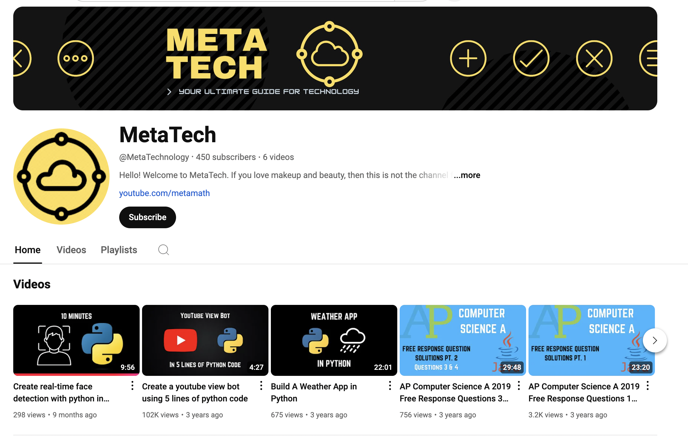
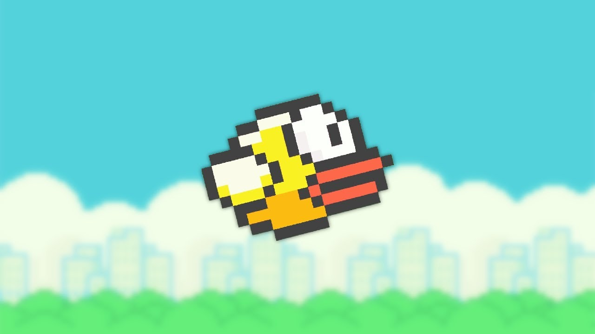
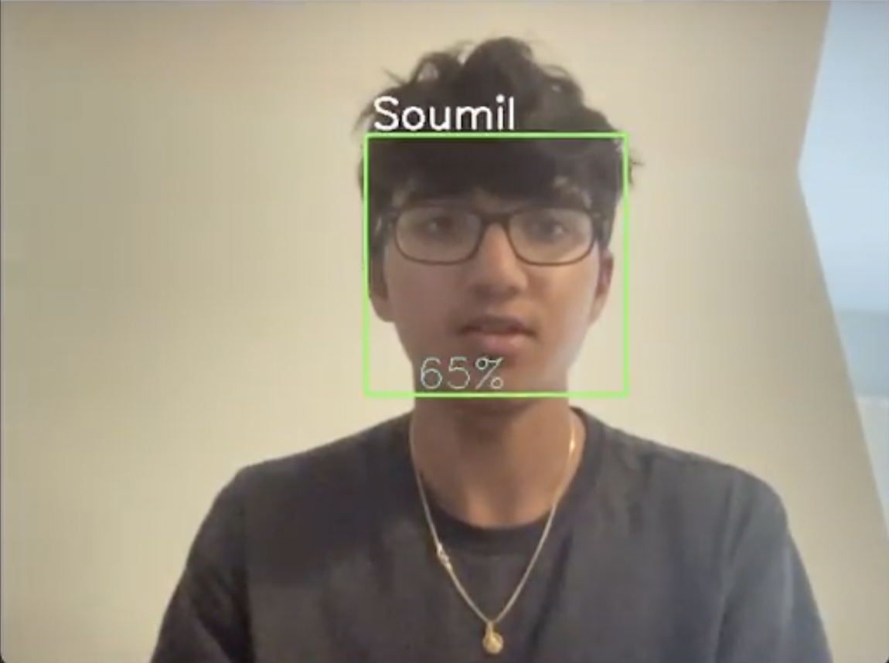
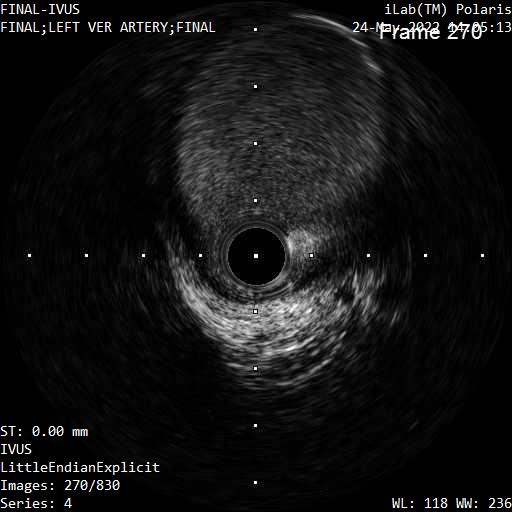
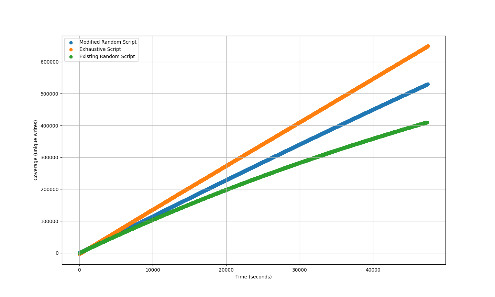

*Note: Links to my work can be found on the "References" page.
I created many freelance projects, including a meditation app, voice detection chatbot, and recreated my favorite games such as Blackjack and Hangman in Java. Code for all these projects can be found on my GitHub, here. The links to working websites for some of those games are on there as well! While doing all this, I began making YouTube videos to share what I knew with some programming tutorials with the world. The channel now has over 100,000 views, and can be found here!
My first exploration into hardware, I built my own computer! In addition, I ventured into more challenging GUI projects with Java, such as games like Pong, Flappy Bird (Python) and a simulation of Conway's Game of Life. The code for these projects can be found on my GitHub, here.
Here's where I began working on some major projects. I spent over 8 months developing a full-stack music sharing platform (called TuneShare) with VueJS for front-end and Firebase for the back end. Users can create their own playlists and upload/share music as well! There's also a fully functioning chatroom for users to discuss music. Additionally, I created a graphical stock market simulator in Java - my first venture into outside Java libraries. The code for these projects can be found on my GitHub, here.
This was the year of the AI for me! I jumped right into TensorFlow and other Python libraries to create my own neural network models for classifying images. In addition, I created a fully voice activated drone with object detection capabilities using OpenCV, for one of my Robotics classes. The site detailing my work for this project can be found here.
My work in AI took off here. I worked in the St. Francis Hospital over the summer and collected over 40,000 images of Intravascular Ultrasounds (the insides of arteries). I then created a model which classified this images as stenosis (diseased) or not, with over 98% accuracy! This paper was submitted to competition, where I received a medal at the Al Kalfus LI Math Fair. In addition, I created a pattern-recognition model that decoded baseball signs - purely out of curiosity from watching Yankees games.
I've just finished working on a research project in hardware security at the BU RISE program! I found two never-before-seen vulnerabilities in a special computer connection called PCIe passthrough. I did this by creating my own algorithms for a method called fuzzing, and my algorithms were found to be significantly more efficient than previous ones, even those created by companies like IBM. My code for these hardware fuzzing algorithms unfortunately cannot be released, until the paper is published at BU, but I will update when I can release the code. My work from this project is being submitted to Regeneron ISEF and Regeneron STS!
